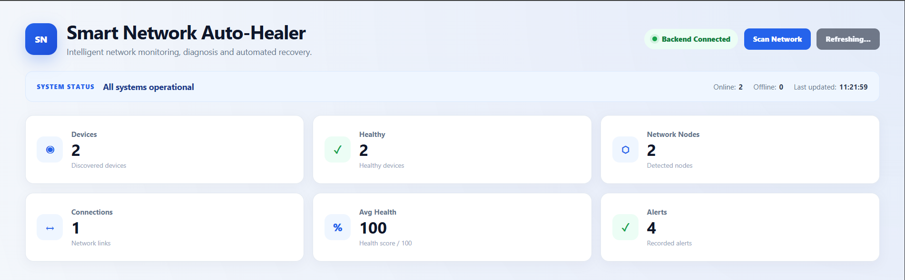

Networking Project
Smart Network Auto-Healer
A network monitoring and troubleshooting system designed to discover devices, monitor network availability, analyze network health, detect issues, generate recovery recommendations, and perform automated recovery actions.
- Device discovery & monitoring
- Network health analysis
- Issue detection
- Recovery recommendations
- Network topology visualization